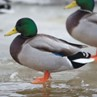

Des comparaisons pour montrer que je suis le meilleur de tous les canards de cette planète.
| Nom | Photo | Peut rester sous l'eau | Ponte (par an) | Altitude de vol | Vitesse de vol | Beauté (/10) | Nage (/10) | |
|---|---|---|---|---|---|---|---|---|
| Patate | Peluchae Patatum | 45 min | 0 (pas besoin de se reproduire quand on est immortel) | 6400 km | 106 km/h | 300 | 300 | |
| Harle Piette | Mergellus Albellus | 45 sec | 9 oeufs | 150 m | 80 km/h | 4 | 3 | |
| Canard Campbell | Anas Platyrhynchos Domestica | 10 sec | 300 oeufs | Ne vole pas | 3 | 1 | ||
| Canard Colvert | Anas Platyrhynchos |  | 10 sec | 23 oeufs | 6400 m | 50 km/h | 8 | 7 |
| Canards Pilet | Anas Acuta | 30 sec | 10 oeufs | 500 m | 105 km/h | 2 | 5 | |
| Canard Branchu | Aix Sponsa | 5 sec | 12 oeufs | 50 m | 56 km/h | 10 | 4 | |
| Canard Mandarin | Aix Galericulata | 5 sec | 9 oeufs | 30 m | 45 km/h | 6 | 10 | |